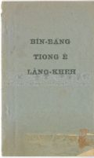

Languages
台文
｜
中文
｜
日本語
｜
English
字體
小
｜
中
｜
大
首頁
/
白話字數位典藏
白話字數位典藏全文檢索
查詢模式
選擇年代
清國時代(1885-1895)
日本時代(1895-1945)
戰後(1945-1969)
1885-1895
1896-1905
1906-1915
1916-1925
1926-1935
1936-1945
1946-1955
1956-1965
1966-1969
1970-1980
1980-1990
1990-2000
2000-2010
2010-
選擇文類
詩
散文
小說
戲劇
傳記
選擇作者
陳清忠
陳清義
編輯部
柯設偕
吳天命
明有德
偕叡廉
周天來
劉華義
王守勇
林茂生
陳添旺
王占魁
柯維思
賴仁聲
陳瓊琚
雪峰逸嵐
吳清鎰
郭水龍
蕭樂善
許水露
葉金木
陳金然
章王由
廖得
鄭連坤
潘道榮
楊士養
梁秀德
劉約翰
周淑慧
高金聲
林燕臣
黃六點
蔡愛義
許有才
主筆
巴克禮
陳鳩水
郭朝成
張基全
陳明清
陳能通
拾穗生
顏振聲
卓恆利
傳道局
胡文池
劉主安
鄭兒玉
Google Search
Yahoo Search
全部
刊名
標題
標題(教羅)
全文
全文(教羅)
作者
第6頁，共7頁(共139筆資料) 0.6467649936676sec
1
...
3
4
5
6
7
To Page
GO
文字列表
圖文列表
排序
日期
文類
刊名
作者
影像
[1966-4 台灣教會公報 文類-小說 作者--/-]
事實小說：求職記 [ SŪ-SIT SIÁU-SOAT: KIÛ CHIT-KÌ ]
事實小說：求職記 I. 好消息我忽然tī報紙看著一個好消息，非常ê歡喜，即時將hit張報紙用走--ê the̍h來到禮拜堂beh報林牧師。"牧師，牧師！我已經有頭路lah。""有影！ 按怎得著？""你看這張報紙所刊ê， tú-tú是我這幾年來逐日teh夢想ê條件。" 林牧師將hit張報紙the̍h起來看，急徵業務員啟事（急徵業務員啟事）: "政大化工有限公司（政大化工有限公司），為著 beh 擴充業務， beh 招募業務員10名， 待遇每月2000 箍以上，若是初中畢業程度， 有意應徵者請寄履歷書附限時郵票寄來台南郵箱3856號，業務處收。若審查合格即通知面協。""我看這個啟事有淡薄giâu...
[1965-7 台灣教會公報 文類-小說 作者--/-]
鄉村ê傳教者 [ Hiong-chhoan ê Thoân-kàu-chiá ]
鄉村ê傳教者 禮拜ê人數直直減少，聚會漸漸冷淡。----這間鄉村ê T. M.教會tī成十年前hō͘人看做是會友濟，經濟好，信徒熱心ê教會；若是近來顯然teh衰退lah.Lîm Tiong-iông傳道歸 tī 拜堂ê 講台前teh祈禱， 教執tī 伊心內ê痛苦thang 對嘴裡 ê吐氣慘慼，甚至流目屎ê 聲表現出來。祈禱soah，親像真厭倦ê款式，入來坐tī讀冊位， chhi̍h桌頂ê日光燈 to̍h，手攬胸，頭殼kia̍h高teh沉思；一幕一幕ê回憶對伊ê 腦內走過去。兩年前：伊 chhoā婦人人Siok-cheng kap兩個囝兒Kèng-it，Sìn-it來到這間教會赴任。夫婦攏抱著...
[1893-1 台南府城教會報 文類-小說 作者--/-]
利益囡仔 [ Lī-ek Gín-ná ]
利益囡仔 1893年 1--月，第 94 卷，p.9 有一個查某囡仔名叫惜á。伊ê心有欠缺，就愛得著活物通疼痛。因為安呢，伊求伊ê老父予伊一隻貓仔，老父甘願就予伊真媠--ê。囡仔大大歡喜。日過日有寶惜彼个金貓仔，常常揀好物予伊食，亦定定愛抱--伊。可惜！經過幾nā日久彼隻貓仔死--去。囡仔就大大憂悶。惜á ê老父看見伊ê囝煩惱到按呢生就買一隻羊仔來予伊。囡仔得著連鞭受安慰，對伊ê老父說多謝。羊仔緊緊認伊做主人，就不止愛綴伊四界去。囡仔佮cheng-seⁿ ná親像相疼做好朋友。無佳哉！閣無偌久羊仔患著病。惜á勞心勞力看ē醫得á無，毋久袂用得，就深深苦痛紲目屎nih-nih-流。好佳哉！隔幾n...
[1887-1 臺灣府城教會報 文類-小說 作者--/-]
取善ê喻言 [ Chhú-siān ê Jū-giân ]
取善ê喻言1887.01 第 19 張 p.7（接17張127面。）蜜蜂受點化了後，心神活動知有意外ê sîn-seng，就去試看，koh ē放蜜也ē做蠟。就對神仙講，加有食就呼群，人有好就著相勸，正是有義；我有兩個朋友，求神仙也 kā 伊點化。神仙講，好--leh，獨獨人著有空虛心，正有福氣；總是你兩個朋友一个倚靠家己做好，一个倚靠氣力勇猛，是oh--得苦勸；雖然用濟濟話苦勸伊也毋來聽，這是伊ê 錯誤。你去kā 伊講，是真朋友ê義，出在伊beh 來毋來，應該著去kā 伊講，是盡朋友ê情。所以蜜蜂就去kā黃蜂講起就近神仙點化ê代誌；拄仔看見黃蜂teh 做巢，排列對偶。黃蜂就對蜜蜂誇口伊起ê蜂巢...
[1886-11 臺灣府城教會報 文類-小說 作者--/-]
取善ê喻言 [ Chhú-siān ê Jū-giân ]
取善ê喻言1886.11 17張 p.127 （1886.11 P.127）(這篇本是印佇上海ê月報，taⁿ予Cheng Bûn-chín 翻譯--ê。內面所講是teh 譬喻道理，人毋知掠做是攏有影。) 上古Tông Gì ê 時，ē飛ê類，就是田嬰、黃蜂、蜜蜂，三个結做朋友，有一日佇穴內大家teh商議。蜜蜂就代先講，當今ê 時舜帝差伊ê人臣益用火燒山林，火一下燒真méⁿ，禽獸走去匿，阮chiah-ê是小可 ê 身軀， thài ē平安徛起佇這世間？田嬰講，阮chiah-ê有讀冊，就知冊內ê意思。易經有講，積善ê家，的確有吉慶；積不善ê家，的確有災殃；若愛平安佇這世間，的確著做好。黃蜂應講...
[1886-1 臺灣府城教會報 文類-小說 作者--/-]
日本ê怪事 [ Ji̍t-pún ê Koài-sū ]
日本ê怪事1886.01 第7張 P.46 差不多十年前，佇日本ê庄社有一人去歇佇hit客店，佇遐食好物，也蹛好所在，請人來吹簫唱曲，啉酒快樂一場。到beh睏ê時，吩咐店主，kah伊明仔載11點鐘著叫伊精神。彼个店主就照伊ê話，到彼時入去beh叫伊；看見眠床前soan出一支狐狸尾，忽然驚到袂顧得，隨時走出來，拍算彼个人客的確是妖怪。家己teh想--kioh毋過有吩咐伊，若無叫伊，又驚了予伊koè-siàu譴責。姑不將閣再入去，就看彼个人客坐佇眠床，teh食薰。彼个人客看見店主心神搭嚇，就問伊，你有入來遮看見啥貨？事先店主毋敢講：kan-ta推辭講：無--ah，無--ah！彼个人客閣講：你的確...
[1923-1 台大楊雲萍文庫白話字史料(編修) 文類-小說 作者--/-]
(23)
十个故事 [ Cha̍p ê kò͘-sū ]
...
[1931-1 台大楊雲萍文庫白話字史料(編修) 文類-小說 作者--/-]
(21)
養心諭言 [ ióng sim jū-giân ]
...
[1929-1 台大楊雲萍文庫白話字史料(編修) 文類-小說 作者--/-]
(54)
益智錄卷二 [ Ek-tì-lio̍k Koàn-jī ]
...
[不詳 台大楊雲萍文庫白話字史料(編修) 文類-小說 作者--/-]
(27)
希蘭的目的 [ Hi-lân ê bo̍k-tek ]
...
[不詳 台大楊雲萍文庫白話字史料(編修) 文類-小說 作者--/-]
(17)
聖誕故事 [ Sèng-tān kó͘-sū ]
...
[不詳 台大楊雲萍文庫白話字史料(編修) 文類-小說 作者--/-]
(49)
銀冰鞋 [ Gûn Peng-oê ]
...
[1917-1 台大楊雲萍文庫白話字史料(編修) 文類-小說 作者--/-]
(21)
仰望地 [ Gióng-bōng Te ]
...
[1952-12 台灣教會公報 文類-小說 作者--/-]
聖誕老人 [ Sèng-tàn lāu-lâng ]
聖誕老人聖尼古拉 (Santa Claus)的故事1952.12 768號 p.21-22尼古拉是一个好額人，總--是愛用伊所有的錢幫贊別人。伊毋愛得著人的感謝，也毋愛予散hiong人覺得見笑，所以常常用暗靜的法度來送錢。得著錢的人煞毋知著感謝是誰。佇城市內有一个真散hiong的人佮伊3个查某子。這个人真可憐，因為伊無錢通予伊3个查某子做客。尼古拉決心欲幫贊這个人。伊想來想去，就到路尾想出一个真好的法度。尼古拉聽候到暗，就用烏衫來moa，趕緊到佇彼个人的厝。是真oh揣,因為彼所在的城市真cha̍t，閣這个人的厝是真細間。尼古拉行到佇遐的時，就四界看，看無人，趕緊對伊的衫提出一个貯滿金的袋仔。有...
[1914-1 台大楊雲萍文庫白話字史料(編修) 文類-小說 作者--/-]
(22)
廟祝問答 [ Biāu-chiok Būn-tap ]
...
[1953-3 台灣教會公報 文類-小說 作者--/-]
主日學：小朋友ê故事 [ Chú-ji̍t-o̍h:Sió pêng-iú ê kò͘-sū ]
主日學小朋友的故事1953.03 771號 p.21-23題 目：一隻驢見著天使 聖經節：民數記22-24章 故事 古早有一隻驢佮伊的主人巴蘭相佮徛起佇一條河邊。佇遐有青翠的草埔，總--是這隻驢若著載巴蘭去別位的時，就著離開媠的河邊，來經過真濟條礁燥坎坷的路。這隻驢是真乖，所以伊的主人真疼--伊，無拍--伊，予伊食到飽，閣佇暗時備辦好的所在予驢通平安歇睏。巴蘭毋是有錢人，伊只有有這隻驢若定，所以若欲去別位，逐擺著騎驢去。巴蘭真疼上帝，閣家己會曉聽上帝的聲。對按呢，四面逐的人攏知伊是真有智識的人。有一日有幾若个穿媠衫，王的使者帶禮物來揣巴蘭。In愛chhoā巴蘭轉--去，來朝見國王。彼个國王真驚...

[不詳 台大楊雲萍文庫白話字史料(編修) 文類-小說 作者--/-]
(14)
眠夢中的人客 [ Bîn-bāng tiong ê lâng-kheh ]
...
[1933-11 台灣教會公報/芥菜子 文類-小說 作者--/-]
Sīm-chiok的祈禱 [ Sīm-chiok ê Kî-tó ]
Sīm-chiok的祈禱 1933.11 (芥菜子第 94號) P.26 瑞芳教會有這个主日學的查某囡仔，名叫Sīm-chiok。今年七歲，猶未讀公學校，因為年尾囡仔。所以真細漢，跤手也真細支；總是記持真好，真賢讀冊，真好膽。若做救主誕的時，攏有peh去台頂唱歌，比遊戲，念救主的來歷，念真長；致到予聽的人攏著驚，講彼个查母囡仔是啥物人的，kán 遐賢。 Taⁿ這个查某囡仔Sīm-chiok 毋若gâu，閣真乖，真溫柔，予逐人真疼伊。這pang有拄著破病真傷重，伊的父母有chhoā伊去入台北市林外科病院。對入院大概經過倚一禮拜久，熱攏無退攏是39 度外。伊的父母心肝真...
[1930-9 台灣教會報 文類-小說 作者--/-]
母囝攏認錯 [ Bó-kiáⁿ lóng jīn chhò ]
母囝攏認錯1930年9月546卷p.8-9 梅蘭的老母提1塊布，想欲共in查某子梅蘭鉸衫褲；總--是佇遐無鉸刀，就叫梅蘭趕緊將鞋kám仔的鉸刀攑--來。梅蘭做伊恬恬，若親像無聽見一樣。老母就閣叫講：「梅蘭--ah！你有聽--見無？趕緊攑鉸刀來予--我。」梅蘭照舊毋振毋動，家己專心做伊teh 畫伊的圖畫。老母受氣了！閣叫講：「梅蘭--ah！你無聽見--mah？叫你共我攑鉸刀，且放下你的圖畫，趕緊去攑，按怎教攏袂振袂動--ah ！」梅蘭照舊無去攑，若親像無代誌的款，做伊蹛遐畫。老母大受氣，走到梅蘭的面前，就對梅蘭的手 ńg khiú teh，講：「趕緊去共我攑。」梅蘭驚一下，攑頭對伊的老母看看-...
[1928-3 台灣教會報 文類-小說 作者--/-]
現代但以理 [ Hiān-tāi Tàn-í-lí ]
現代但以理 1928.03.01 516卷p.8 伊用按怎來徛佇獅的中間？(有這个兄弟的非常的疼痛)。 毋但但以理蹛獅穴過暝nā-tiāⁿ，佇無幾年前，也有一個嶄然勇敢的囡仔入佇獅穴。這个事後來有人共Hián-lí殿下講。這个事就是：－ 佇1917年，有一個查某囡仔名Í-sū-ta̍t (Esta Garcia)，出世跤就破相。伊有一个身上的兄，名Au-hut-lia̍t (Alfred)真疼伊，也向望伊這个小妹無偌久會佮伊thit-thò。若是漸漸知這个軟汫細漢的 Í-sū-ta̍t的確連行to袂。 這个囡仔憐憫的心，愈大漢愈深，也盡伊所會teh做，欲予這个破相的生涯較幸...
第6頁，共7頁(共139筆資料)
1
...
3
4
5
6
7
To Page
GO
數位典藏國家型科技計劃
拓展台灣數位典藏計畫
版權所有 國立台灣師範大學 台灣文化及語言文學研究所©2008
10610 台北市和平東路一段162號│TEL 02-7734-5516│Fax 02-2358-2461
計劃簡介
典藏特色
執行架構
計畫典藏數位化流程
成員介紹
台灣白話字發展簡介
巴克禮牧師與《台灣教會公報》
廈門話字典-杜嘉德
白話字教學-打馬字
中國南方白話字發展
台灣基督教長老教會簡表
台灣基督教長老教會教會歷史委員會
《北部台灣基督長老教會教會ê歷史》
關於陳清忠
白話字文學：台灣文學的早春